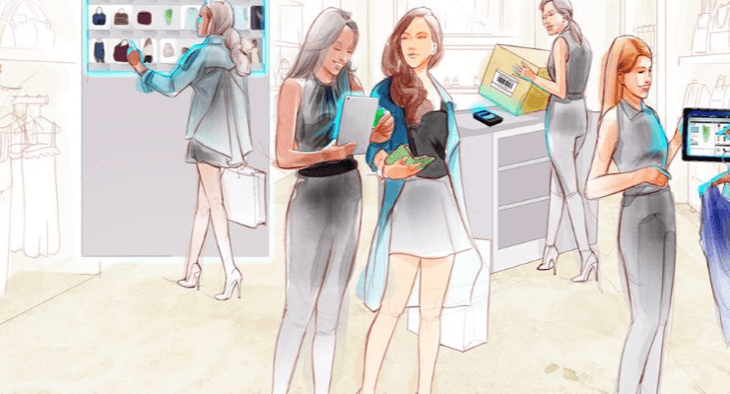
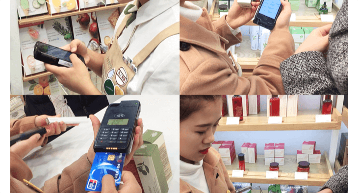

新零售时代：传统零售商拥有天时、地利、人和的优势

The physical stores will always exist, but its form needs to change. In this transformation, mobile is the real driving force!
From apps to hi-tech consumer products, technology is slowly making the shift from sci-fi to reality – and we are loving it. New technology is taking our shopping routines and habits to the next level with customisable options that help provide a bespoke service to suit individual needs. It’s time to come up with the solution to meet our nowadays customer’s expectation.
What do consumers expect from staff who are using mobile devices?
• 50% of customers expect the ability to immediately check additional store inventory
• 24% of customers expect to receive the personalized recommendation based on their purchasing history
• 49% of customers expect to check out and make payment on the go anywhere anytime on the floor
• Customers queing 5 minuteswill dump their shopping basket
This is already the expectation of consumers today, when mobile device usage within the store is still in its relative infancy. This appetite for innovation on behalf of the consumer is only going to increase – which highlights a huge opportunity for retailers.
Some prefer to wait and watch for further developments. Others are already using mobile devices to transform store operations and drive the ability to connect and serve customers like never before.
“Innisfree, as one of the fastest growing brands under Amorepacific, has inherited the spirit of innovation and achieved a geometric growth over the past 4 years, especially in the Chinese market. The application of Mobile POS allows them to offer a personalized service to the customers at retail stores. Each of salespersons is now equipped with a mobile POS which has successfully eliminated queuing and empowered them to respond to customer’s various requests anywhere, anytime on the floor.”

What’s stopping you? Why wait and see? Smart retailers are taking the initiative, embracing the technology, and engaging today’s tech-savvy shoppers by delivering on their hyper-smart shopping expectations. There’s no time like the present. It’s the future of retail.
POSPi
http://pospi.com
About POSPi:
POSPi, headquartered in Shanghai, specializes in the R&D of innovative mobile retail technology solutions to enable retailers to step into future smart retailing era.
We understand the complete, end-to-end retail requirement – from both the retailer and the customer side. We’re helping retailers connect the various parts of their operation and connect with their customers. We’re leading the retail mobility journey to deliver the innovation in-store that’s measurable in lasting loyalty and satisfaction. And increased sales revenue.